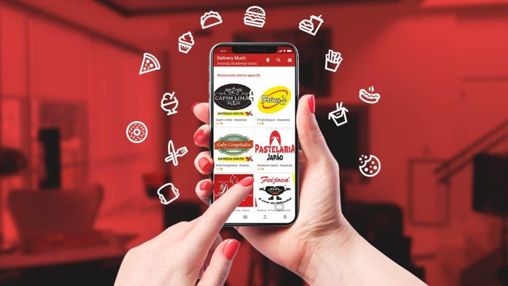

Fique atento aos possíveis riscos:



Ficou com alguma dúvida?
Fale conosco: Av Boa Viagem 234, Recife - PE Brasil
Av Boa Viagem 234, Recife - PE Brasil sybersecurity@people50+.com.br
sybersecurity@people50+.com.br (81) 94542-6288
(81) 94542-6288 WhatsApp
WhatsApp